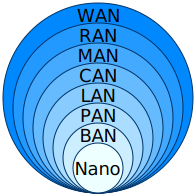

Networking
Intro
This document contains my notes on Networking Fundamentals, which I studied in preparation for the Cisco Certified Network Associate (CCNA) certification.
Tools
Cisco Packet Tracer, an innovative network configuration simulation tool.
Basic networking terms
Computer network
A computer network is a group of two or more computers that are linked together used to share resources, to exchange files, or to communicate with others.
MAC address
A MAC address (short for medium access control address) is a unique identifier assigned to a network interface controller (NIC) for use as a network address in communications within a network segment.
MAC address formats: XX:XX:XX:XX:XX:XX, XX-XX-XX-XX-XX-XX or XXXXXXXXXXXX - 6 groups of 2 hexadecimal digits (12-digit: 6 bytes or 48 bits).
First half of MAC address is typically the manufacturer's organizationally unique identifier (OUI) and the second half is unique number.
LAN
A local area network (LAN) is a computer network that interconnects computers within a limited area such as a residence, school, laboratory, university campus or office building.
WAN
A wide area network (WAN) is a telecommunications network that extends over a large geographic area.
DHCP
The Dynamic Host Configuration Protocol (DHCP) is a network management protocol used on Internet Protocol (IP) networks for automatically assigning IP addresses and other communication parameters to devices connected to the network using a client–server architecture
Firewall
A firewall is a network security system that monitors and controls incoming and outgoing network traffic based on predetermined security rules. A firewall typically establishes a barrier between a trusted network and an untrusted network, such as the Internet.
Firewalls are categorized as a
- Network-based firewalls are positioned between two or more networks, typically between the local area network (LAN) and wide area network (WAN), their basic function being to control the flow of data between connected networks. They are either a software appliance running on general-purpose hardware, a hardware appliance running on special-purpose hardware, or a virtual appliance running on a virtual host controlled by a hypervisor.
- Host-based firewalls are deployed directly on the host itself to control network traffic or other computing resources. This can be a daemon or service as a part of the operating system or an agent application for protection.
IDS & IPS
Intrusion detection systems (IDS) and intrusion prevention systems (IPS) are device or software application that continually monitor a network or systems, detect and log potential incidents, take action to stop the incidents, and notify/warn security administrators.
TCP
Transmission Control Protocol (TCP)
IP
The Internet Protocol (IP) is the network layer communications protocol for routing and addressing packets of data to destination across network.
TLS
Transport Layer Security (TLS) is a cryptographic protocol designed to provide communications security over a computer network.
TLS builds on the now-deprecated Secure Sockets Layer (SSL) specifications.
Communication protocol
A communication protocol is a system of rules that allows two or more entities of a communications system to transmit information. The protocol defines the rules, syntax, semantics, and synchronization of communication and possible error recovery methods.
PDU
A protocol data unit (PDU) is a single unit of information transmitted among peer entities of a computer network.
ARP
The Address Resolution Protocol (ARP) is a communication protocol used for discovering the link layer address, such as a MAC address, associated with a given internet layer address, typically an IPv4 address.
Network devices
Repeater
A Repeater (also called a hub) is an electronic device that receives a signal and retransmits it. Repeaters are used to extend transmissions so that the signal can cover longer distances or be received on the other side of an obstruction.
Some types of repeaters broadcast an identical signal, but alter its method of transmission, for example, on another frequency or baud rate (speed of communication).
Repeaters operate on the physical layer, the first layer of the OSI model;
Network bridge
A network bridge is a computer networking device that creates a single, aggregate network from multiple communication networks or network segments.
Network switch
A network switch (also called switching hub, bridging hub, and, by the IEEE, MAC bridge) is networking hardware that connects devices on a computer network by using packet switching to receive and forward data to the destination device.
A network switch is a multiport network bridge that uses MAC addresses to forward data at the data link layer (layer 2) of the OSI model. Some switches can also forward data at the network layer (layer 3) by additionally incorporating routing functionality. Such switches are commonly known as layer-3 switches or multilayer switches. In contrast to repeater, network switches has intelligence.
Network switches mainly operate on the data link layer, the second layer of the OSI model and used in LAN.
Router
A router is a networking device that forwards data packets between computer networks using IP addresses.
Routers operate on the network layer, the third layer of the OSI model ;
Wireless Access Point
A wireless access point, or just access point (AP), is a networking hardware device that allows other Wi-Fi devices to connect to a wired network or wireless network.
As a standalone device, the AP may have a wired connection to a switch or router, but, in a wireless router, it can also be an integral component of the router itself.
Wireless LAN Controller
A wireless LAN controller (WLC) is a network device used to monitor and manage wireless access points in an organization. WLCs are connected to routers and allow devices from across the organization to connect to the router via access points.
Lightweight Access Point
A Lightweight Access Point (LWAP) is a type of wireless access point (AP) which is managed, configured and controlled by wireless LAN controller (WLC). Unlike LWAP, autonomous access points operates independently and does not need WLC.
Computer network types by scale
- Nanoscale
- Near-field (NFC)
- Body
- Personal (PAN)
- Near-me
- Local (LAN)
- Storage (SAN)
- Wireless (WLAN)
- Virtual (VLAN)
- Home (HAN)
- Building
- Campus (CAN)
- Backbone
- Metropolitan (MAN)
- Municipal wireless (MWN)
- Wide (WAN)
- Cloud
- Internet
- Interplanetary Internet
OSI and TCP/IP Model
OSI and TCP/IP Model
TCP/IP has 5 layers and we refer to the top layer (Application layer) as layer 7 because TCP/IP is originated from OSI Model.
| Layers | OSI Model | TCP/IP | Description | Protocols | Devices | PDUs |
|---|---|---|---|---|---|---|
| 7 | Application | Application | Human-Computer interaction | HTTP, HTTPS, Telnet,FTP, TFTP | Data | |
| 6 | Presentation | Compression and Encryption protocols | SSH | |||
| 5 | Session | Connection maintenance | NFS,RPC,SCP | |||
| 4 | Transport | Transport | End-to-end connection | TCP/UDP | Segments | |
| 3 | Network | Network | Logical addressing | IPv4/IPv6,ARP,IGMP,ICMP | Router | Packets |
| 2 | Data Link | Data Link | Physical addressing | Ethernet | Bridge/Switch | Frames |
| 1 | Physical | Physical | Physical transmission of signals,media or binary raw bits | Cable(CAT 5,6),DSL,Optic fiber | Network Hub | Bits |
Ports
Port ranges
| Start | End | Designation |
|---|---|---|
| 0 | 1023 | System or well-known ports |
| 1024 | 49151 | User or registered ports |
| 49152 | 65535 | Dynamic, private or ephemeral ports |
Ephemeral port
An ephemeral port is a communications endpoint (port) of a transport layer protocol of the Internet protocol suite that is used for only a short period of time for the duration of a communication session.
Numeral system and networking
IP Addressing
What is IP Address?
- layer 3 logical address assigned by an administrator
- resides at layer 3 of OSI Model
- used to identify specific devices on a network
- every device on the internet has a unique IP address
IPv4 Characteristic
IPv4
- layer 3 or Network layer protocol
- connectionless protocol
- TCP on other hand is connection oriented
- packets are treated independently
- may take different path (load balancing, bandwidth, hopcount)
- hierarchical addressing structure
- network and host portion
- best effort delivery with no guarantee
- no data recovery features
- no built-in sessions
- no retransmission
IPv4 address format
- 32 bit
- x.x.x.x - 4 octets(8 bits or 1 byte)
Network and Host portion
- 10.x.x.x - IP address
- 255.0.0.0 - network mask (also known as subnet mask)
- N.H.H.H - Network/Host portions
Private IPv4 address class ranges
| RFC 1918 name | IP address range | Number of addresses | Largest CIDR block (subnet mask) | Network/Host | Classful description |
|---|---|---|---|---|---|
| 24-bit block | 10.0.0.0 – 10.255.255.255 | 16777216 | 10.0.0.0/8 (255.0.0.0) | N.H.H.H | single class A network |
| 20-bit block | 172.16.0.0 – 172.31.255.255 | 1048576 | 172.16.0.0/12 (255.240.0.0) | N.N.H.H | 16 contiguous class B networks |
| 16-bit block | 192.168.0.0 – 192.168.255.255 | 65536 | 192.168.0.0/16 (255.255.0.0) | N.N.N.H | 256 contiguous class C networks |
Public IPv4 address class ranges
| Class | Start address | End address | Default address mask | Network/Host | CIDR notation |
|---|---|---|---|---|---|
| Class A | 0.0.0.0 | 127.255.255.255 | 255.0.0.0 | N.H.H.H | /8 |
| Class B | 128.0.0.0 | 191.255.255.255 | 255.255.0.0 | N.N.H.H | /16 |
| Class C | 192.0.0.0 | 223.255.255.255 | 255.255.255.0 | N.N.N.H | /24 |
| Class D (multicast) | 224.0.0.0 | 239.255.255.255 | not defined | /4 | |
| Class E (reserved) | 240.0.0.0 | 255.255.255.255 | not defined | not defined |
Special addresses
-
Directed Broadcast Address
- used by hosts to send data to all devices on a specific network.
- binary 1s in the entire host portion of the address (e.g. Network: 172.31.0.0, Directed broadcast:172.31.255.255)
- on routers disabled by default
-
Local Broadcast Address
- used to communicate with all devices of local network
- addresses is all binary 1s (e.g. 11111111.11111111.11111111.11111111 - 255.255.255.255)
- e.g. used by host to request an IP address from a DHCP server
- always dropped by routers and layer 3 switches
-
Local loopback address
- A loopback address or 'localhost' IP addresses range 127.0. 0.0 to 127.255. 255.255.
- used to let a system to send a message to itself for testing
::1is IPv6 assigned to loopback- NOTE: routers and switches also have loopback addresses which are not the same as local loopback address.
Subnet Masks
- used to determine network and host portion
- used to determine weather a device is remote (i.e. to be reached via default gateway) or local (i.e. same subnet) (e.g. if two hosts are on the same subnet then they communicate directly with each other rather then forwarding the traffic to default gateway to route it)
- e.g. IP: 10.1.1.1, Network mask: 255.0.0.0 (N.H.H.H), Network: 10.0.0.0, NetId: 10, HostId: .1.1.1
CIDR notation
CIDR - Classless Inter-Domain Routing
- introduced on 1993 and so far more preferable
- uses 10.0.0.0/8 (8 binary bits) notation instead of 10.0.0.0 255.0.0.0
- enables Variable Length Subnet Mask (VLSM) (e.g. 255.224.0.0 = /11) but in Class A is always /8, Class B is always /16 and Class C is always /24.
Initial Device Configuration
How to connect to a Cisco router or switch
- Router/Switch Console port RJ45 to/form DVG/USB (NOT Ethernet port)
IP Subnetting
Subnetting - Binary Method
-
IP Address
- Subnet/Network Address: Fill the host portion of an address with binaries 0's
- 1st Host Address: Fill the host portion of an address with binary 0's expect for the last bit which is set to binary 1
- Last Host Address: Fill the host portion of an address with binary 1's expect for the last bit which is set to binary 0
- Broadcast Address: Fill the host portion of an address with binary 1's
-
Example 1:
- IP Address is 192.168.1.18/24 or 192.168.1.18 255.255.255.0, N.N.N.H - Network and Host Portion
- Subnet: 192.168.1.00000000 = 192.168.1.0
- 1st Host: 192.168.1.00000001 = 192.168.1.1
- Last Host: 192.168.1.11111110 = 192.168.1.254
- Broadcast: 192.168.1.11111111 = 192.168.1.255
-
Example 2:
- IP Address is 172.16.35.123/20 or 172.16.35.123 255.255.240.0 or 172.16.0010|0011.01111011
- Subnet: 172.16.0010|0000.00000000 = 172.16.32.0
- 1st Host: 172.16.0010|0000.00000001 = 172.16.32.1
- Last Host: 172.16.0010|1111.11111110 = 172.16.47.254
- Broadcast: 172.16.0010|1111.11111111 = 172.16.47.255
Subnetting - Quick method
- Shortcut Table
| 128 | 64 | 32 | 16 | 8 | 4 | 2 | 1 |
|---|---|---|---|---|---|---|---|
| 128 | 192 | 224 | 240 | 248 | 252 | 254 | 255 |
- IP Address is 172.16.35.123/20 or 172.16.35.123 and Mask 255.255.240.0
- Subnet/Network octet lies between 32 and 48 with the interval of 16 (from table for mask value 240), last octet is always 0: 172.16.32.0
- Broadcast = Next Network - 1: 172.16.48.0 - 1 = 172.16.47.255
- First host = Subnet + 1: 172.16.32.0 + 1 = 172.16.32.1
- Last host = Broadcast - 1: 172.16.47.255 - 1 = 172.16.47.254
Subdivide a network/subnet
- How to subdivide a network/subnet when given:
- Specific number of host required
- Specific number of subnets
Hosts = 2^n - 2 (-2 is -Subnet and -Broadcast addresses) Subnets: 2^n
Commands
# How to get MAC address of device in network. See https://www.baeldung.com/linux/arp-command
ping 10.0.0.1
arp -a
# Switch CLI
show mac address-table
Notes
- Link-local address
- Network address translation
- RFC 1918
- Routing Protocol
- determines best path or route